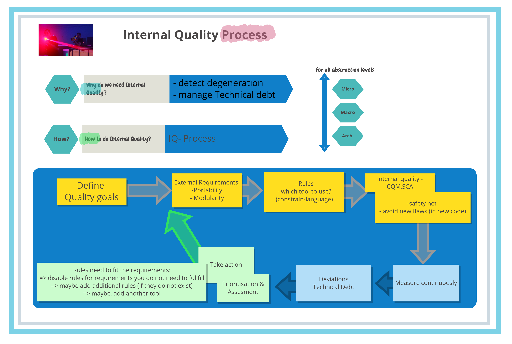
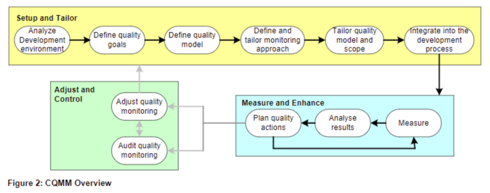
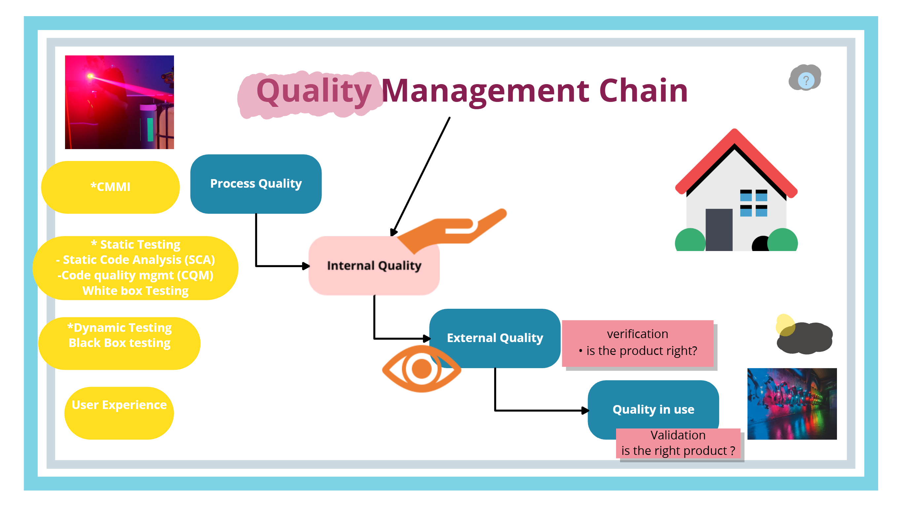
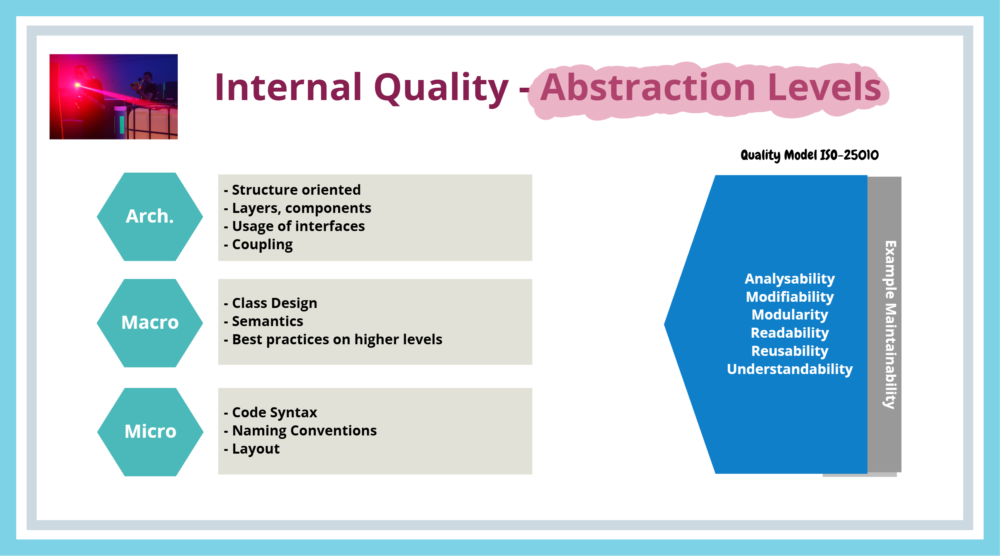
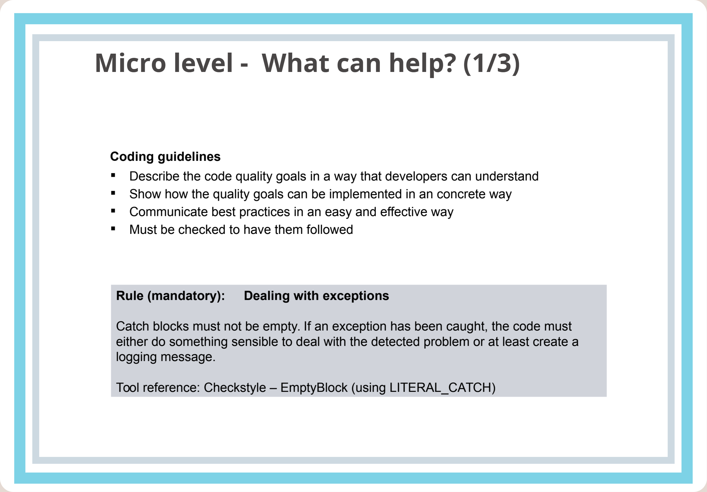
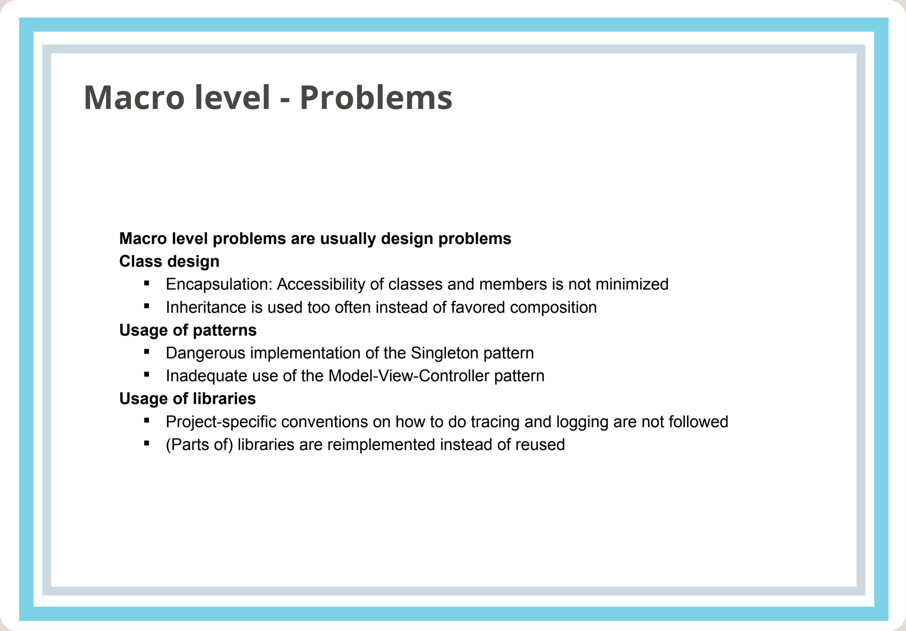
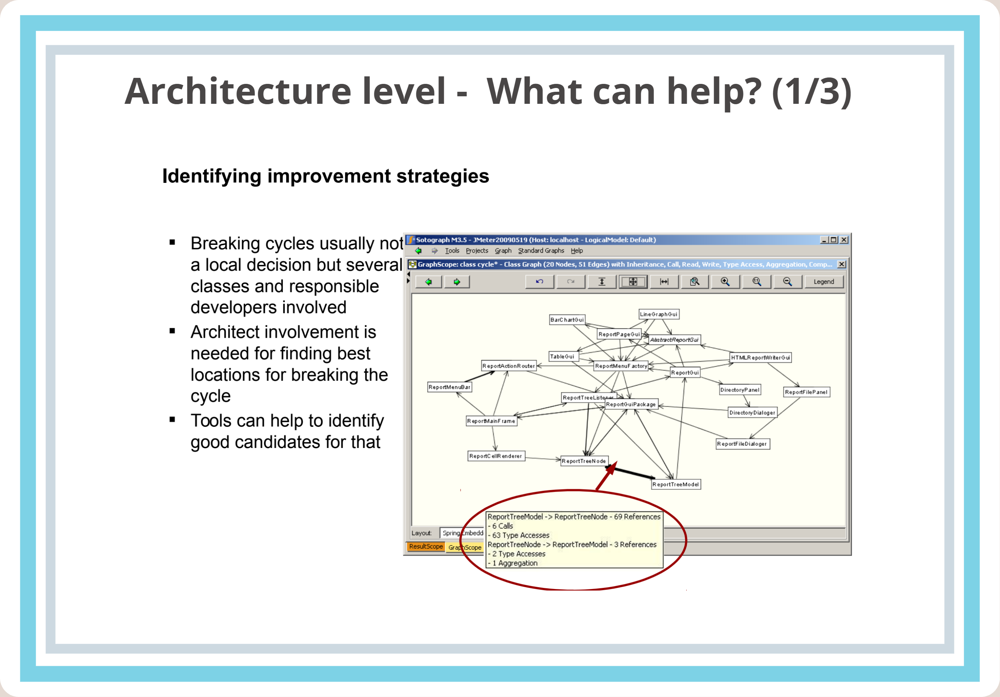
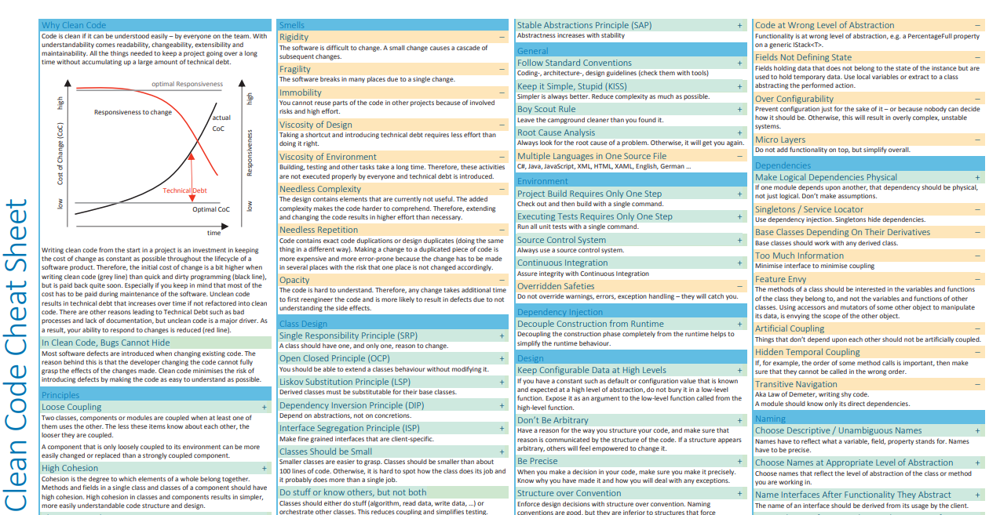

Internal Software Quality
Internal Software Quality (Internal Software Quality) represents a fundamental pillar for building maintainable, testable, and safe software systems. In the context of software architecture and test architecture, it is an uncompromising discipline: the external quality of a system (its behavior and reliability for users) cannot be sustained over the long term without a high level of internal quality.
#


#Brief Topic Summary
Internal software quality (Internal Software Quality) expresses the structural and static properties of source code and architecture that are not directly visible to the end user but fundamentally determine the maintainability, analyzability, modifiability, reusability, and testability of a system.
The fundamental principle is that quality cannot be "tested into" software at the end (Quality cannot be tested in). Design and development are responsible for quality throughout the entire life cycle. Code Quality Management (CQM) encompasses the methods, processes, and tools (static code analysis, complexity metrics, coding rules, and peer review) that ensure internal quality is maintained. CQM connects process quality with the quality of the final product across the quality management chain (Quality Management Chain) at three levels of abstraction (architecture, macro, and micro levels).
In domains with stringent safety and reliability requirements (embedded systems, automotive development under ISO 26262 / Automotive SPICE, industrial automation), internal quality management is an explicit process requirement associated with eliminating run-time errors and ensuring traceability.
#Definitions and Basic Concepts
#Concept 1: Internal vs. External Quality (Internal vs. External Quality)
- Definition: According to ISO 9126 / ISO 25010, internal quality measures the static properties of software (code, architecture, structure) from a developer's perspective without having to run the system. External quality measures the dynamic behavior of a computer system while it is running, from a user's perspective (functionality, reliability, performance).
- Significance in architecture: Internal quality is the "hidden root" (invisible root) of external behavior. The architect manages internal properties (decoupling, modularity, layering) to ensure that the system does not succumb to "software aging" (software aging) and increasing technical debt.
- Significance in testing: High internal quality directly determines testability (testability). It enables easy component isolation and efficient writing of unit and integration tests without the need for complex mocking of unpredictable dependencies.
- Typical mistake or misunderstanding: Neglecting internal quality in favor of rapid functionality delivery ("the code works in the demo, so it is done"). A dysfunctional internal structure means that every change introduces secondary regression defects.
- Example from embedded/safety practice: In a braking system control unit (ECU), external quality consists of braking distance and response time. Internal quality consists of error-free memory allocation, the absence of stack overflows, and compliance with MISRA C rules in C/C++ code.
#Concept 2: Code Quality Management (CQM)
- Definition: CQM is a set of systematic activities, tools, and methods that continuously measure, evaluate, and ensure the fitness and quality of a software system's source code against defined project and architectural objectives.
- Significance in architecture: The software architect acts as the protector of software system quality (protector of software quality). The architect defines CQM rules, selects static analysis tools, and oversees architectural conformance.
- Significance in testing: CQM represents the earliest form of static testing (Shift-Left). It enables errors in logic, allocation, or memory to be detected before dynamic tests are run, significantly reducing the cost of correcting errors.
- Typical mistake or misunderstanding: Understanding CQM merely as an "annoying code formatting check" in the IDE, with no connection to architectural metrics (complexity, cyclic dependencies), or leaving it without clear ownership within the team.
- Example from embedded/safety practice: Deploying static analyzers (for example, PC-Lint, QAC, SonarQube) in the CI/CD pipeline with zero tolerance for undefined behavior in C/C++.
#Concept 3: Quality Management Chain (Quality Management Chain)
- Definition: The holistic connection of the individual links of quality across the development cycle: Process quality (Process Quality) \(\rightarrow\) Internal quality of code and architecture (Internal Quality) \(\rightarrow\) External system quality during testing (External Quality) \(\rightarrow\) Quality in use (Quality in Use).
- Significance in architecture: Shows that a weakness in an early link of the chain (for example, a poorly defined peer-review process or unclear module boundaries) inexorably propagates defects into the final product.
- Significance in testing: Testing verifies external quality, but failures of internal quality cause a massive increase in testing cycle costs (structural errors are discovered only during integration or validation instead of in unit tests).
- Typical mistake or misunderstanding: Assuming that an excellent testing team will rescue a product damaged by poor processes and chaotic architecture ("testing will fix quality").
- Example from embedded/safety practice: Development according to Automotive SPICE (SWE.1 through SWE.6). If the architecture of a software component fails (SWE.2), unit verification (SWE.4) cannot guarantee the correct decomposition of system safety requirements (ISO 26262).

* CMMI = Capability Maturity Model Integration
Assessment and integration (Effectuate process improvement; Develop behaviors that decrease risks in service, product, and software development)
* Process quality definition
Process quality refers to the degree to which an acceptable process, including measurements and criteria for quality, has been implemented and adhered to in order to produce the artifacts.
* Internal quality is about the design of the software.
This is purely the interest of development. If Internal quality starts falling the system will be less amenable to change in the future. Hence the need for refactoring, clear coding, relentless testing, and the like. You need to be very careful about letting internal quality slip. Ward has a wonderful DebtAnalogy that discusses it.
* Internal Quality is everything the software does not do. It's the implementation, which the customer never directly sees, and often does not want to spend time or money on. Ironically enough, it's often what determines whether projects succeed or not.
* External Quality:
It's most obvious measure is the Functional Tests, and some measure of the bugs that are still loose when the product is released. In the FourVariables the quality variable is external quality.
* Quality-in-use:
Quality in use is the degree to which a product or system can be used by specific users to meet their needs to achieve specific goals with effectiveness, efficiency, freedom from risk and satisfaction in specific contexts of use.
Its metrics are only available when the final product is used in real conditions.
Ideally, the internal quality determines the external quality and external quality determines quality in use.
#Concept 4: Levels of Abstraction of Internal Quality (Micro, Macro, Architecture levels)
- Definition: A structured breakdown of internal code quality into three layers:
- Micro level (Micro level): The level of individual lines of code – naming conventions, layout, variable locality, and the absence of risky constructs.
- Macro level (Macro level): The level of class and module design – cohesion, interfaces, design patterns, and object-oriented principles (SOLID).
- Architecture level (Architecture level): The level of the overall system – layering (layers), components, dependency isolation, API stability, and the absence of cyclic dependencies between modules.
- Significance in architecture: The architect must manage quality at all three levels, with the macro and architecture levels requiring direct manual intervention and rule setting, because simple linters alone cannot cover them fully.
- Significance in testing: The micro level addresses unit testability (unit testing), the macro level determines module integration testability, and the architecture level determines system and acceptance testability.
- Typical mistake or misunderstanding: Focusing exclusively on the micro level (the linter is green) while the architecture suffers from "spaghetti dependencies" between components (architecture erosion).
- Example from embedded/safety practice:
- Micro: Ensuring safe allocation without dynamic malloc in C.
- Macro: Using the Driver/HAL design pattern to abstract away the hardware.
- Architecture: Strictly separating the Application Layer from the Data Abstraction Layer (DAL) and the Vehicle Data Dictionary interface.





#Internal quality clean sheet (PDF)
#Concept 5: Internal Quality Process (Internal Quality Process & Defect Gap Analysis)
- Definition: A formalized internal quality verification process involving static code checks, technical peer reviews/inspections, and an auto-quality matrix (Auto-quality test matrix / Defect gap analysis). The matrix records the phase gap between the introduction of an error and its actual detection.
- Significance in architecture: Enables architectural feedback. If design errors are not discovered until system integration or validation, the internal quality process has failed and requires adjustment.
- Significance in testing: Provides metrics for measuring the effectiveness of test levels and the static verification process.
- Typical mistake or misunderstanding: Tracking only the absolute number of errors found without analyzing the phase in which an error was introduced and where it should properly have been detected (Phase Containment Efficiency).
- Example from embedded/safety practice: Using the Auto quality test matrix in Valeo/Siemens projects. Detecting specification or design errors during unit tests triggers a Change Request and an update to review checklists.
#3. Common Mistakes and Anti-Patterns
+------------------------------------+
| INSUFFICIENT INTERNAL QUALITY |
+-----------------+------------------+
|
+------------------------------------------+------------------------------------------+
| | |
v v v
+------------------+ +------------------+ +------------------+
| ARCHITECTURAL | | TESTING and | | COMMUNICATION and|
| ANTI-PATTERNS | | PROCESS ERRORS | | PROCESS ERRORS |
+------------------+ +------------------+ +------------------+
| • Big Ball of Mud| | • Post-hoc test. | | • CQM as "police"
| • God Object | | • Linter-driven | | • Unassertive |
| • Tight Coupling | | • Ignoring | | architect |
+------------------+ | Phase Gap | +------------------+
+------------------+
#1. Architectural Mistakes
- Big Ball of Mud & Cyclic Dependencies (Architecture Level):
- Problem: Components lack clearly defined boundaries and depend on one another cyclically.
- Manifestation: It is impossible to test a single component in isolation; every code change has an unpredictable effect on the entire system (high ripple-effect complexity).
- Prevention: Introduce layered architecture, interfaces (interfaces), and strict dependency checks using architectural tools (for example, Axivion, Sotograph, Structure101).
- God Class / Big Component (Macro Level):
- Problem: A class or module accumulates too many responsibilities (an SRP violation).
- Manifestation: Extremely high cyclomatic complexity (McCabe metric > 20), confusing code, and an inability to achieve full coverage through code-level tests.
- Prevention: Refactor into smaller classes combined through composition and set metric limits in CQM.
#2. Requirements and Specification Mistakes
- Absence of non-functional quality requirements (Ignorance of quality attributes):
- Problem: Requirements focus only on functionality ("what it should do") but ignore internal properties ("how it should be designed").
- Manifestation: Fragile code is created that cannot be scaled or maintained.
- Prevention: Define explicit quality requirements (ISO 9126 / ISO 25010) in the architectural specification.
#3. Test Strategy and Automation Mistakes
- "Testing-in Quality" Anti-pattern (Post-hoc testing):
- Problem: Testing is understood as a phase at the end of development that is supposed to "ensure quality".
- Manifestation: Critical architectural flaws are discovered just before release; correction costs are extreme.
- Prevention: A Shift-Left strategy, incorporating a static verification process, inspections, and TDD from the very beginning.
- Blind "Linter-Driven Quality" (Micro-only focus):
- Problem: The team focuses only on ensuring that the static checker reports no warnings at the micro level (spaces, variable names), while ignoring the macro and architecture levels.
- Manifestation: The code is "neatly formatted" but architecturally completely dysfunctional and untestable.
- Prevention: Combine automated static tools with architect-led manual peer reviews and architectural analysis.
#4. Mistakes in Interpreting Testability and in Communication
- Lack of CQM ownership and a poor culture:
- Problem: Developers see CQM as an inspection "obstacle" or "policing" by architects.
- Manifestation: Circumventing static analysis rules (ignoring warnings, suppression through empty catch blocks).
- Prevention: Build a quality culture (code quality culture), involve the team in creating rule sets (rule sets), and integrate checks directly into the IDE.
#4. Examination Questions
#1. Basic-Level Questions
- Q1: What is the fundamental difference between internal and external software quality, and which standards define these concepts?
- What a good answer must include: Precise definitions according to ISO 9126 / ISO 25010. Internal quality = static properties of code/architecture accessible without execution (white-box). External quality = the dynamic behavior of a running system from the user's perspective (black-box). An explanation of the causal relationship (internal quality is the root of external quality).
- Q2: What is Code Quality Management (CQM), and what are its main pillars?
- What a good answer must include: CQM is a process and set of tools for ensuring the fitness of source code. Pillars: static analysis, adherence to coding guidelines, measurement of metrics (McCabe, coupling), peer reviews / inspections, and a quality culture within the team.
#2. Intermediate Questions
- Q3: Explain the 3 levels of abstraction of internal quality (Micro, Macro, Architecture), and give examples of tools and techniques for each level.
- What a good answer must include: The division into Micro (lines of code, linters such as PC-Lint, QAC, IDE plugins), Macro (class design, SOLID, complexity metrics, manual reviews), and Architecture (components, layering, absence of cycles, architectural analyzers such as Axivion, Sotograph, Structure101).
- Q4: How is internal software quality related to its testability (Testability)?
- What a good answer must include: Testability is a key internal characteristic (ISO 9126 Maintainability sub-characteristic). Low internal quality (high coupling, absence of interfaces) prevents unit isolation during unit testing and forces the team to write expensive end-to-end tests.
#3. Advanced Questions and Questions About Practical Experience
- Q5: Describe how the Auto-quality test matrix (Auto-quality test matrix / Defect Gap Analysis) works and why it matters in verification and validation processes.
- What a good answer must include: An explanation of tracking the gap between the phase in which an error is introduced (for example, specification, design) and the phase in which it is detected (unit, integration, validation test). Experience with evaluation: if design errors escape into integration, review checklists and architectural checks need to be adjusted.
- Q6: How would you, as a Software Architect, establish CQM in a safety-critical embedded system project (for example, under ISO 26262)?
- What a good answer must include: Selection of standards (MISRA C/C++), configuration of static analysis in CI/CD (PC-Lint/QAC) with no tolerance for blocking warnings, elimination of runtime errors, definition of memory allocation rules, and links between requirements and tests (traceability from the architecture to the test executed on the target).
#4. Questions About Trade-Off Decisions
- Q7: How do you balance investment in improving internal quality (refactoring, static analysis, inspections) against Time-to-Market pressure and project costs?
- What a good answer must include: The trade-off being examined: excessive compromises in internal quality lead to an astronomical increase in maintenance and regression testing costs (technical debt); conversely, "over-engineering" can jeopardize the business opportunity window. The solution: risk-based quality management (Risk-Based Quality Management), focusing CQM on critical components (safety/core logic), and automating static checks in the CI/CD pipeline.
#5. Model Examination Answer
The topic of Internal Software Quality and Code Quality Management represents the very core of sustainable software architecture.
To define internal quality, I would start from ISO 9126 or ISO 25010. Whereas external quality describes a system's dynamic behavior through the user's eyes – whether the system works, is fast, and is safe – internal quality expresses the static and structural properties of source code and architecture. It is the part of quality hidden from the user, but for us as architects it is a fundamental prerequisite for maintainability, modifiability, and testability. Peter Zimmerer of Siemens puts it this way: Quality cannot be tested into a system at the end.
The importance of internal quality for software architecture lies in the fact that the architecture is directly reflected in the code. If we do not manage internal quality, architectural erosion occurs – cyclic dependencies arise, and areas of clean design become a confusing monolith. Internal quality has a fundamental impact on testing: it directly determines testability. Code with high internal quality uses interfaces, has low coupling and high cohesion, and thus enables developers and testers to write fast, isolated unit and integration tests.
To manage internal quality effectively, we divide code into three levels of abstraction:
- At the Micro level, we address the cleanliness of individual lines of code – conventions, dangerous constructs, and exception handling. Here, we make extensive use of automated linters and static checkers such as PC-Lint or QAC, integrated directly into developers' IDEs.
- At the Macro level, we assess class and module design – compliance with SOLID principles and complexity. Here, tools are no longer sufficient, and architect-led technical peer reviews and inspections come into play.
- At the Architecture level, we monitor layering, component boundaries, and the absence of cycles between packages, using advanced tools such as Sotograph or Axivion.
A real practical example: In automotive control unit development (under ISO 26262 and Automotive SPICE), we establish the internal quality process by requiring source code to pass strict static analysis for compliance with MISRA C rules and zero runtime errors. At the same time, we use the so-called Auto-quality test matrix. If we discover an error during validation on a test bench, we determine where it originated. If it originated in the architecture but was not detected until the system level, this means the internal verification chain has failed, and we immediately update architectural review checklists.
The main trade-off decision we must make as architects is balancing the rigor of checks against delivery speed. The aim is not to paralyze the development team with a hundred thousand linter warnings. The architect must configure CQM pragmatically based on risks (Risk-Based Testing / Quality Management) – imposing strict restrictions and zero tolerance for critical safety and domain modules, while choosing a more relaxed approach for supporting parts.
In conclusion: The software architect must act as the protector of internal quality. Without systematic internal quality management at the micro, macro, and architecture levels, every software system will sooner or later collapse under the weight of its own technical debt.”
#6. Short Version for Quick Review (Cheat Sheet)
#5 Main Points:
- Quality cannot be tested in: Quality is created by development and architecture; testing only verifies it.
- Internal \(\rightarrow\) External Quality: Internal quality (code/architecture) is the cause of external quality (system reliability/behavior).
- CQM is a key role of the architect: The architect defines coding rules, metrics, and static analysis tools.
- 3 levels of internal quality: Micro (lines), Macro (classes/relationships), Architecture (components/layers).
- Defect Gap Analysis: Tracking the phase gap between the introduction and detection of an error increases the effectiveness of internal processes.
#5 Key Terms:
- Internal Quality: Static properties of code and architecture (ISO 9126).
- Code Quality Management (CQM): Processes and tools ensuring code fitness.
- Quality Management Chain: The chain: Process \(\rightarrow\) Internal quality \(\rightarrow\) External quality \(\rightarrow\) Quality in use.
- Static Code Analysis: Verification of code without executing it (linters, MISRA C, PC-Lint).
- Testability (Testability): An internal code characteristic enabling effective isolation and testing.
#5 Typical Examination Questions:
- What is the difference between internal and external software quality?
- What are the 3 levels of abstraction of internal quality, and which tools are used at each?
- How do architecture and internal quality affect software testability?
- What is the Auto-quality test matrix (Defect Gap Matrix), and what is it used for?
- How can strict enforcement of CQM be balanced with development speed (time-to-market)?
#3 Most Common Mistakes:
- Understanding testing as a phase that "puts" quality into software (Testing-in quality).
- Focusing only on the micro level (linter) while ignoring architectural cycles and erosion.
- Failing to measure gaps between defect introduction and detection (Phase Containment Failure).
#1 Concise Model Sentence for the Examination:
"Internal software quality represents the static and architectural properties of code that, although not directly visible to users, determine the testability and maintainability of a system, while the architect's role is to manage CQM across the micro, macro, and architecture levels."
#7. Learning Outcome (Connection to LOPO)
In accordance with the Learning and practice outcomes (LOPO) document, this material fulfills the following learning and practice objectives:
- Discussing the importance of internal quality and the relationships in the overall "Quality Management Chain": The material precisely defines the connection between process quality (CMMI/ASPICE), internal code quality, the external quality of dynamic behavior, and the final benefit to users.
- Categorizing the levels of abstraction of internal quality as "architecture", "macro", and "micro": The material identifies specific problems at each level (for example, cyclic dependencies at the architecture level vs. high cyclomatic complexity at the macro level vs. coding guideline violations at the micro level) and assigns appropriate preventive and verification measures to them.
- Discussing the concept of internal quality for error detection and testability: The material explains how early static checks (Shift-Left) and architectural decoupling directly increase testability and reduce the overall cost of defect detection.
#8. Summary in One Table
| Area | What Matters | Relationship to Architecture | Relationship to Testing | Typical Examination Question |
|---|---|---|---|---|
| Internal vs. External Quality | Distinguishing static code properties (internal) from dynamic behavior (external) according to ISO 9126. | Internal quality prevents architectural aging and technical debt. | Internal quality directly determines testability and test modularity. | How are the internal properties of code related to the external reliability of a system? |
| Code Quality Management (CQM) | A set of processes, rules, and tools (linters, metrics, reviews) for code fitness. | The architect is responsible for CQM, defines rules, and oversees architectural conformance. | CQM is the earliest form of static testing; it eliminates errors before dynamic tests are run. | Which CQM metrics and tools would you deploy in the CI/CD pipeline? |
| Quality Management Chain | The sequence: Process \(\rightarrow\) Internal quality \(\rightarrow\) External quality \(\rightarrow\) Quality in use. | Shows the impact of architectural decisions on the overall quality chain. | Explains why testing cannot replace quality missing from design and development. | Explain why quality cannot be "tested into" a system at the end. |
| Levels of abstraction (Micro, Macro, Arch) | Dividing internal quality into micro (lines), macro (classes/relationships), and architecture (components/layers). | Each level requires different architectural management (automated linters vs. manual reviews vs. architectural analyzers). | Micro affects unit tests, Macro affects module integration tests, Architecture affects system tests. | Which internal quality problems can you detect automatically, and which require manual review? |
| Internal Quality Process & Gap Analysis | Static verification, inspections, and the Auto-quality test matrix (identifying the gap between error introduction and detection). | Provides feedback for the architecture – design errors caught in tests change review processes. | Provides metrics for the effectiveness of individual test levels (Phase Containment Efficiency). | How does the Auto-quality test matrix work, and how can you use it to improve the development process? |